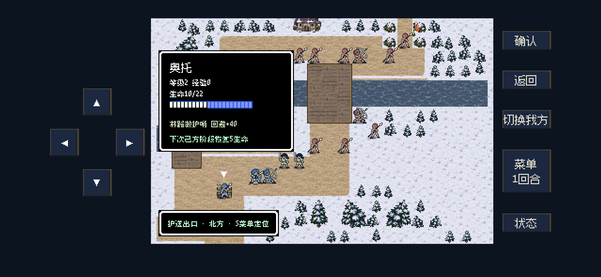
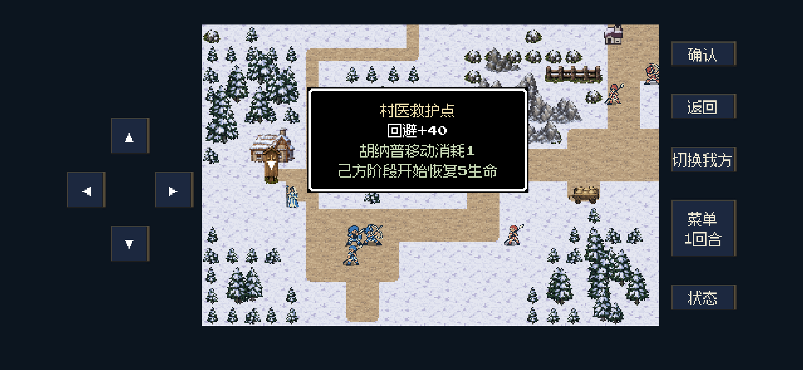
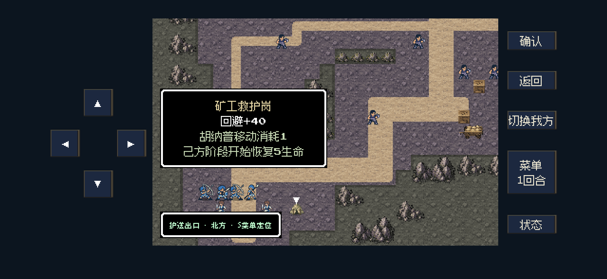
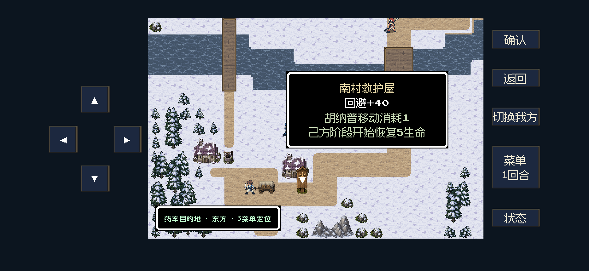

第一章恢复建筑
M表示西队主线，字母后第一位数字表示章节：M11是第一章，M31是第三章；F21是第二章东队主线，S表示支线。
驻守恢复格，下次己方阶段开始恢复5生命，最多到生命上限。不需要额外占领，不会落脚即回血，不能解除濒死；敌军驻守沿用同一规则。
新增四处早期救护点
| 地图 | 建筑 | 零起点坐标 | 处理 |
|---|
| M11 流民林路 | 林路救护哨 | (4,14) | 新增 |
| M12 丘堡粮站 | 村医救护点 | (3,16) | 原诊所门前挂牌 |
| S11 旧矿道救援 | 矿工救护岗 | (9,19) | 主巷旁布置救护帐 |
| S12 林村诊所道路 | 南村救护屋 | (10,20) | 原民房门前挂牌 |
M13三处、M14和M15各一处原有恢复岗堡保留，第一章共9格。新增点位使用现有建筑与救护牌；药车交付、赫维岗位、矿工撤离和贝克护送保持。
48项规则检查、8项画面检查通过；四关正常输入通关，共1829次输入。S11达恩本轮濒死，通关不等同于难度体验完全验证。未改敌军数值，未更新iPhone。
Markdown位置表、修改依据与验证范围 · 规则检查 · 文字安全区检查 · 通关摘要
四处运行画面
后台视口截取，每处一张；同时覆盖人物驻守和空格提示，没有重复截图。
M11 · 林路救护哨 · 人物驻守信息
M12 · 村医救护点 · 空格恢复信息
S11 · 矿工救护岗 · 空格恢复信息
S12 · 南村救护屋 · 空格恢复信息